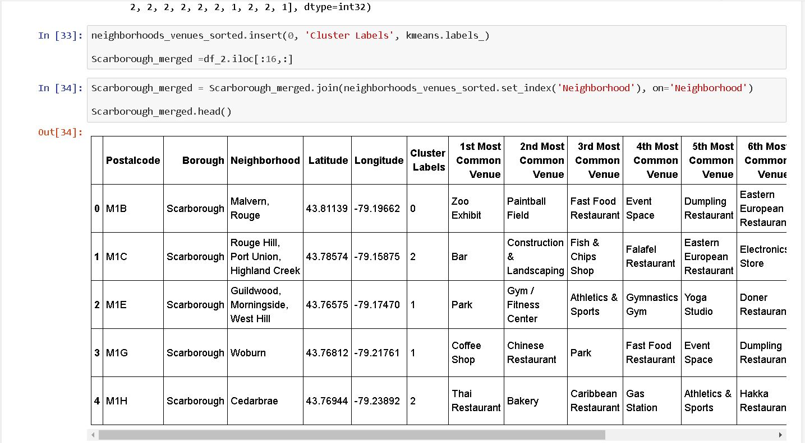
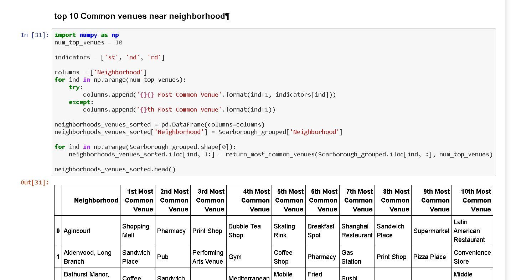
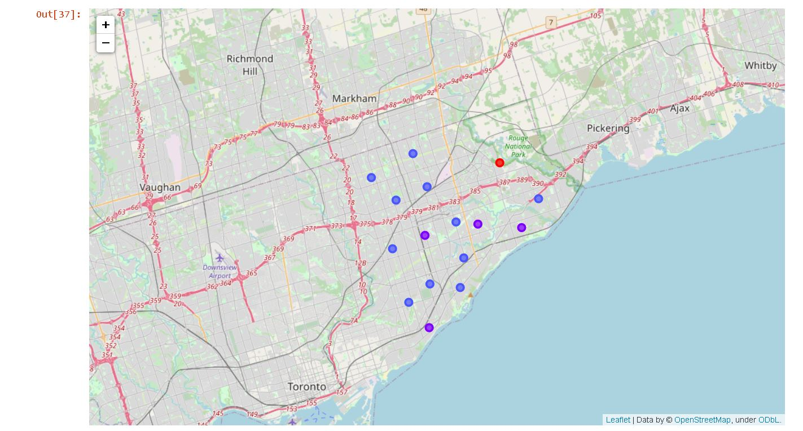
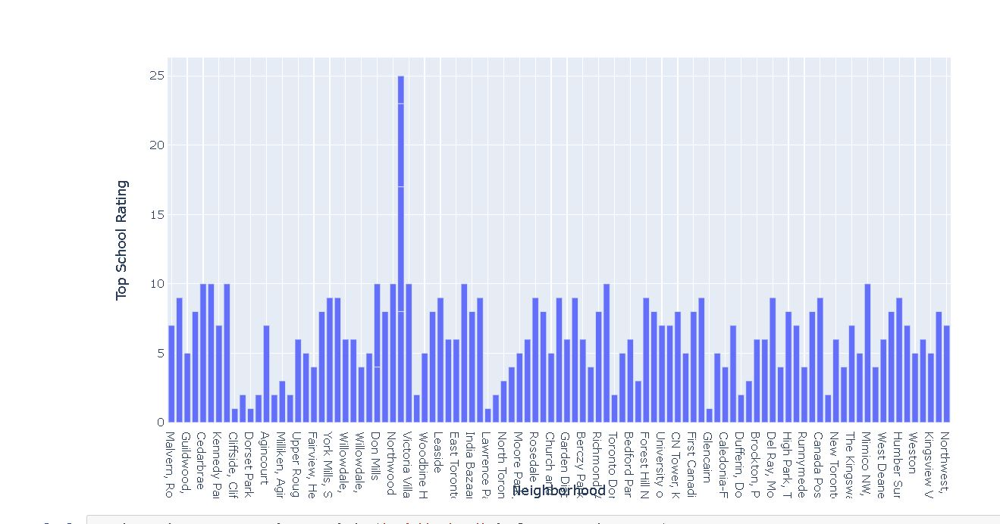

The purpose of this Project is to help people in exploring better facilities around their neighborhood. It will help people making smart and efficient decision on selecting great neighborhood out of numbers of other neighborhoods in Scarborough, Toranto. Lots of people are migrating to various states of Canada and needed lots of research for good housing prices and reputed schools for their children. This project is for those people who are looking for better neighborhoods. For ease of accessing to Cafe, School, Super market, medical shops, grocery shops, mall, theatre, hospital, likeminded people, etc. This Project aim to create an analysis of features for a people migrating to Scarborough to search a best neighborhood as a comparative analysis between neighborhoods. The features include median housing price and better school according to ratings, crime rates of that particular area, road connectivity, weather conditions, good management for emergency, water resources both fresh and waste water and excrement conveyed in sewers and recreational facilities. It will help people to get awareness of the area and neighborhood before moving to a new city, state, country or place for their work or to start a new fresh life.
DataLink: https://en.wikipedia.org/wiki/List_of_postal_codes_of_Canada:_MWi ll use Scarborough dataset which we scrapped from wikipedia. Dataset consisting of latitude and longitude, zip codes. 2.1 Foursquare API Data We will need data about different venues in different neighborhoods of that specific borough. In order to gain that information, we will use "Foursquare" locational information. Foursquare is a location data provider with information about all manner of venues and events within an area of interest. Such information includes venue names, locations, menus and even photos. As such, the foursquare location platform will be used as the sole data source since all the stated required information can be obtained through the API. After finding the list of neighborhoods, we then connect to the Foursquare API to gather information about venues inside each and every neighborhood. For each neighborhood, we have chosen the radius to be 100 meters. The data retrieved from Foursquare contained information of venues within a specified distance of the longitude and latitude of the postcodes. The information obtained per venue as follows: 1. Neighborhood 2. Neighborhood Latitude 3. Neighborhood Longitude 4. Venue 5. Name of the venue e.g. the name of a store or restaurant 6. Venue Latitude 7. Venue Longitude 8. Venue Category
Clustering Approach: To compare the similarities of two cities, we decided to explore neighborhoods, segment them, and group them into clusters to find similar neighborhoods in a big city like New York and Toronto. To be able to do that, we need to cluster data which is a form of unsupervised machine learning: k-means clustering algorithm.
Using K-Means Clustering Approach  Most Common venues near Neighborhood Work Flow: Using credentials of Foursquare API features of near-by places of the neighborhoods would be mined. Due to http request limitations the number of places per neighborhood parameter would reasonably be set to 100 and the radius parameter would be set to 500.
Map of Clusters
 Average Housing Price by Clusters School Ratings by Clusters Location Scarborough is a popular destination for new immigrants in Canada to reside. As a result, it is one of the most diverse and multicultural areas in the Greater Toronto Area, being home to various religious groups and places of worship. Although immigration has become a hot topic over the past few years with more governments seeking more restrictions on immigrants and refugees, the general trend of immigration into Canada has been one of on the rise. Foursquare API: This project has used Four-square API as its prime data gathering source as it has a database of millions of places, especially their places API which provides the ability
5.1 Problem which Tried to Solve The major purpose of this project, is to suggest a better neighborhood in a new city for the person who are shifting there. Social presence in society in terms of like-minded people. Connectivity to the airport, bus stand, city centre, markets and other daily needs things nearby. 1. Sorted list of houses in terms of housing prices in a ascending or descending order. 2. Sorted list of schools in terms of location, fees, rating and reviews.
5.1 Problem which Tried to Solve In this project, using k-means cluster algorithm I separated the neighborhood into 3 different clusters and for 103 different latitude and longitude from dataset, which have very-similar neighborhoods around them. Using the charts above results presented to a particular neighborhood based on average house prices and school rating have been made.